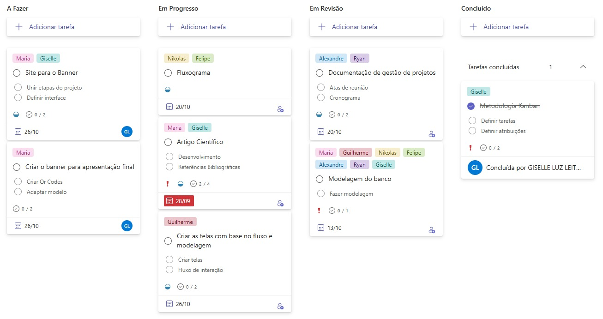

Modelagem de Banco de Dados
A estrutura do banco de dados do AETHER foi planejada para garantir integridade e eficiência no gerenciamento das informações da confeitaria.

O DER representa entidades como Clientes, Pedidos, Produtos, Ingredientes, Usuários e Controle de Estoque.
Gestão de Projetos
Matéria do quarto semestre de Sistemas de Informação.
05/09/2025
Primeira reunião do grupo onde foi definido todas as tarefas.
19/09/2025
Segunda reunião do grupo e primeira com o professor orientador Julio Cesar onde foram definidos todos os caminhos do projeto e referências bibliográficas.

03/10/2025
Terceira reunião do grupo onde mostramos ao professor orientador o artigo do projeto, onde havia a introdução e metodologia científica.
05/10/2025
Reunião on-line com a empresa BibiBrigadeiros para alinhar estratégias e pensamentos.

10/10/2025
Reunião on-line feita para definição da modelagem de dados para o projeto.
28/10/2025
Reunião feita para mostrar o site do projeto ao professor orientador e alinhar os últimos detalhes.
Kanban do Projeto
Utilizamos o Microsoft Planner para organizar as tarefas e monitorar o progresso do desenvolvimento. Essa abordagem facilitou o acompanhamento das entregas e a colaboração entre os integrantes.
O Kanban ajudou a priorizar tarefas, dividir responsabilidades e visualizar o status (A fazer / Em progresso / Em revisão / COncluído). Foi fundamental para manter sincronia entre os membros.
Integrantes do Grupo
Equipe responsável pelo desenvolvimento do sistema AETHER:
Maria Eduarda Belentani Endo, 18
Sistemas de Informação
Giselle Luz Leite, 18
Sistemas de Informação

Felipe Santos, 25
Ciências da Computação
Nikolas Araújo Pereira, 20
Sistemas de Informação
Ryan Natanael da Silva, 20
Ciências da COmputação

Guilherme Laurenço, 25
Sistemas de Informção
Alexandre, 27
Sistemas de Informação
Demonstração do Sistema
Acesse o site interativo criado para demonstrar o funcionamneto do sistema AETHER e a integração com o banco de dados.

O site contém prompts e exemplos que mostram a comunicação com o banco de dados e as principais telas do sistema (cadastro, pedidos, estoque, relatórios).
Acesse o siteConteúdos Principais do PI
Abaixo, os materiais desenvolvidos ao longo do Projeto Integrador.
Acessar Artigo Acessar Banner